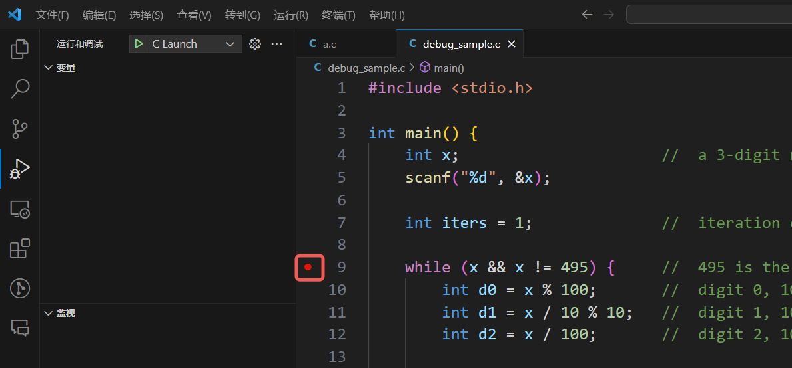
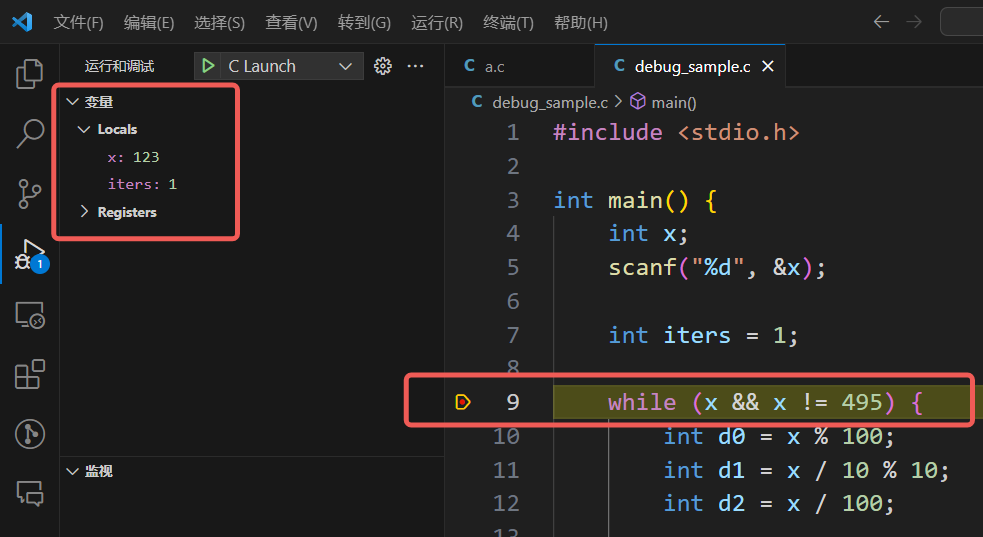
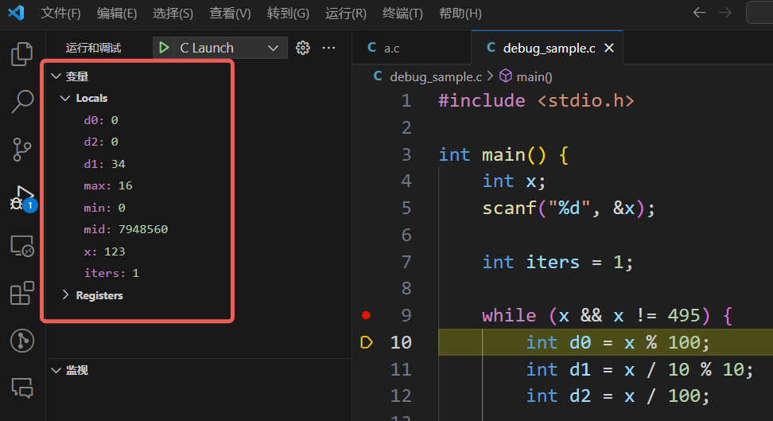
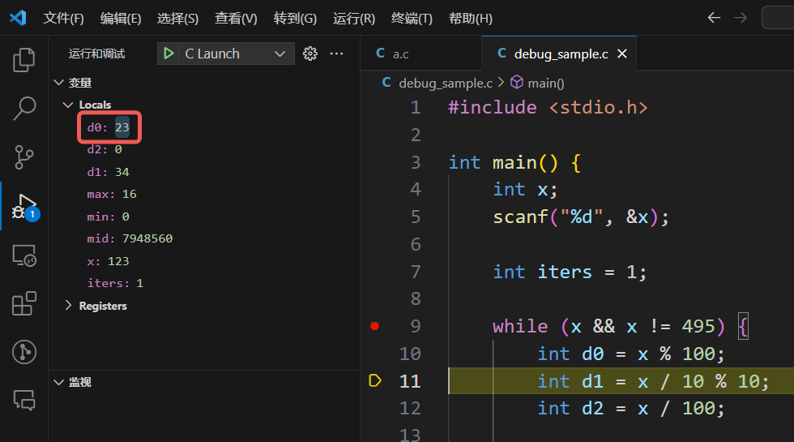

调试样例
回顾 W2 课内的第三道编程题“黑洞数”。
题面
黑洞数也称为陷阱数，又称“Kaprekar 问题”，是一类具有奇特转换特性的数。
任何一个各位数字不全相同的三位数，经有限次“重排求差”操作，总会得到 495。最后所得的 495 即为三位黑洞数。所谓“重排求差”操作即组成该数的数字重排后的最大数减去重排后的最小数
例如，对三位数 207：
第 1 次重排求差得：720 - 27 = 693；
第 2 次重排求差得：963 - 369 = 594；
第 3 次重排求差得：954 - 459 = 495；
以后会停留在 495 这一黑洞数。如果三位数的 3 个数字全相同，一次转换后即为 0。
任意输入一个三位数，编程给出重排求差的过程。
输入格式：
输入在一行中给出一个三位数。
输出格式：
按照以下格式输出重排求差的过程：
序号从 1 开始，直到 495 出现在等号右边为止。
输入样例：
输出样例：
代码长度限制：16 KB
时间限制：400 ms
内存限制：64 MB
样例代码
注意，以下的代码是有错的，我们希望进行 debug
当然，在变量的设计等方面这段代码可以再进行更多优化，不过在此就不详细讨论了
先简单解释一下算法思想。d0, d1, d2 分别是三位数的个位、十位、百位，max, mid, min 分别是三个数位中最大的、居中的和最小的，iter 为迭代次数。每轮迭代更新 x，使用的公式为
按照黑洞数的要求，循环的中止条件为 495。另外，当 x=0 时，可知对应 max=min=mid，即三个数位都相同，应当中止。
中间的三个 if 语句 (18-32 行 ) 用途是对 d0, d1, d2 进行排序，从而得到 max, mid, min。对 max, mid, min 初始化为 d0, d2, d1，这样只有必要时才修改初始化的默认值，可以省去 else 语句。例如第一个 if 语句，只有 d1 > d0 时才有必要修改初始化的默认值。
程序编译运行之后，发现死循环。输入 123，输出为
printf 大法
回顾我本人应用 printf 大法的框架：
- 定位问题发生的区域
- 定位异常变量
- 定位问题发生的代码
这里发生的问题是死循环，那么首先定位问题发生的区域，由于该代码中只有一个循环（9-44 行的循环x=0 是特殊的输入才会触发的终止条件，那么关键就是无法正常计算得到 495
从题目要求的输出，可以看到重排之后出现了四位数，那么 x 在迭代之后肯定是异常的变量。x 由 max, min 计算得到，那么 max, min 的计算至少一者出了问题。
针对死循环问题，最初的异常发生是需要定位的。这就需要手动控制迭代的次数，将原代码的第 9 行修改为
这样迭代最多只会进行 3 轮了，在受限的输出中可以找到是从哪里开始出现死循环的异常输出。当然 3 可以改写为任何你想指定的有限迭代次数。
依然输入 123，发现输出为
那么事实上只有一行输出也能看出问题了，第一轮计算的时候就有四位数出现了。尝试打印所计算的 max, min，即在第 33 行加入
这里需要注意的点是，printf 的时候建议使用 变量名 = %d/%f 的格式，并且用 \n 换行结尾，这样会让你打印的信息看起来更加清楚。还是输入 123，发现输出为
可以看到 max 的计算不太对劲（是两位数min 看起来似乎没有问题。max, min 的来源是 d0, d1, d2，说明 d0, d1, d2 的计算中出了一些问题，于是进一步递归定位根本的异常变量（或者说更深入地定位异常代码
依然输入 123，发现输出为
可以看到，d0, d2 都出现了两位数的情况，而 d0 是始终都是两位数，d2 是第二轮开始才是两位数，d1 似乎没有问题。由此定位到第 10 行和第 12 行仔细检查计算逻辑。
仔细检查，发现 d0 在原代码中的计算实际上是计算后两位数（模 100 的余数d2 对于三位数是正确的，后续出现问题只是因为前面 d0 的错误的连锁反应导致 x 变成了四位数，才导致 d2 计算错误。实际上硬要修改也可以让 d2 再模一个 10。
VSCode 调试插件
断点是 VSCode 调试（实际上是 gdb 调试）的重要功能。调试程序时，运行到断点处会停下来等待你的进一步操作。好的断点设计可以减少单步调试的时间。
加断点的位置也需要配合定位问题区域、异常变量、异常代码，例如定位问题区域后可以在第 9 行加上一个断点。如下图所示，在红框处点击就可以加上一个断点。

点击 C Launch 开始调试，输入 123 并回车（记得要输入x 没有问题地读入了，iters 的计数也没有问题。

单步往下执行一行（用快捷键 F10 或者点击如下红框的图标）
会发现变量区发生了巨大的变化，增加了循环内特有的变量。但是注意执行到第 10 行时第 10 行自身的代码没有被执行，即 d0 的赋值此时还没有进行，d0, d1, d2, max, mid, min 的值全都是随机的。

再单步一次，发现 d0 的值变化了，此时第 10 行的代码才真正被执行。注意到 d0 被赋值为了一个两位数，这肯定不对，所以迅速定位到了问题代码，随即修改 d0 的计算代码即可。

这里这个例子中，VSCode 调试的优势在于断点 + 单步调试，可以一步步跟着机器执行代码，观察变量值何时发生异常。如果对代码比较熟悉，定位比较快的话，使用 printf 也是非常不错的选择。
同时也不要被这个例子中 VSCode 调试的便利骗了，如果异常代码在比较靠后的位置，或者要几次迭代才能发现的话，只使用单步调试是不够的，需要结合更多的断点设计并使用运行（快捷键 F5）等功能才行。未来的复杂代码中将会有很多函数，那么单步跳入（快捷键 F11）也是非常常用的功能。